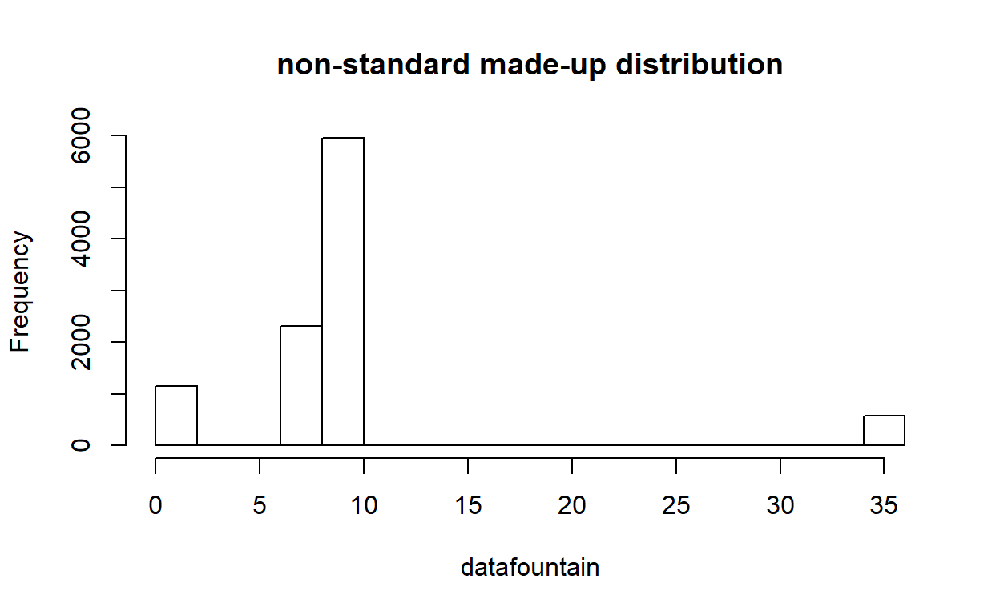
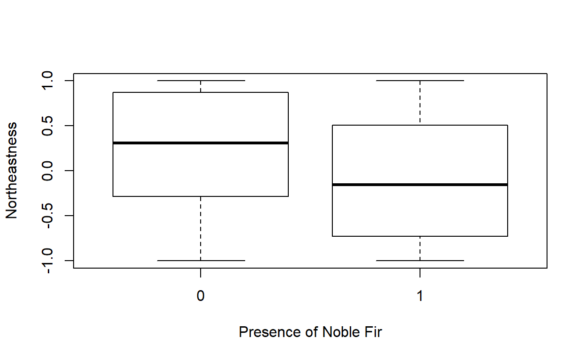

Lab Exercise 1
NRES 746
Fall 2018
As with all lab reports, your answers will either take the form of R functions or short written responses. The R functions should be stored in an R script file (‘.R’ extension). To allow me to evaluate your work more efficiently, please name your R script using the following convention: “[your first name]_[your last name]_lab1.R“. So my submission would be”kevin_shoemaker_lab1.R“.
Please submit the R script and the Word document via WebCampus by midnight on the due date (one week after the final lab session allocated for this topic – here, Sep. 11). You can work in groups but submit the materials individually. One student in each group should be an ‘R guru’ if at all possible!
Please provide any requested written answers as a Word document in WebCampus- keep your responses as brief as possible! I will not be lookin’ for proper English y’hear?
Programming algorithms in R
This lab will provide a basic introduction to the R programming Language and the use of R to perform basic statistics and programming tasks. Some of the materials from this lab (especially the regression example) were borrowed/modified from the previous instructor for this course (P. Weisberg).
INTRODUCTION
In this course we will rely heavily on the R programming language for statistical computing and graphics (e.g., this website is actually built in R using the ‘rmarkdown’ package!). The purpose of this first laboratory exercise is to develop the level of familiarity with R that is needed to succeed in this course – and ultimately, to establish a foundation for you to develop your data analysis skills using R throughout your scientific career.
This lab exercise will extend over two laboratory periods (Aug. 28 and Sep. 4), with your R script and Word document due Sept. 11.
SET UP
Open the Rstudio software. Change the working directory to a convenient directory (e.g., a subfolder called ‘Lab 1’ in your main course directory). NOTE- if you set up an Rstudio “project” in this directory, the working directory is set automatically!
PROCEDURE
STEP I: Set up R on your laptop!
Go to website http://cran.r-project.org/. This is the source for the free, public-domain R software and where you can access R packages, find help, access the user community, etc. The instructor will walk you through this website and provide some discussion on the R software program.
STEP II. Take some time to get familiar with R
From the R manual, ‘Introduction to R’ you will implement all the steps in Appendix A, located here. This takes you far but without much explanation– it is a way to jump into the deep end of the pool. Alternatively, or in addition, go to the Links page and pick a tutortial to run through (e.g., the Datacamp introductory R course). You can also check out the materials from UNR’s R “bootcamp”. Before you move on, make sure you have a basic understanding of how to work with R and RStudio. If you are working with someone who has used R before, don’t be afraid to ask questions! Also, take your time with this- you might want to use the entire lab period on this if you have never used R before.
Another useful introductory R tutorial can be found here, courtesy of NCEAS. Please take the time to complete this tutorial, including going through the exercises.
If you already have basic R expertise, this is your opportunity to help your peers to develop the level of comfort and familiarity with R that they will need to perform data analysis and programming tasks in this course.
Depending on whether you are already familiar with R, you may also find the remainder of this document useful as you work your way through the course (and there are many other good introductory R resources available online… let me know if there is one you particularly like and I will add it to the course website (Links page). As you work your way through the tutorial(s) (on your own pace), please ask the instructor or your peers if you are uncertain about anything.
STEP III. Demonstration: Central Limit Theorem (CLT)
To gain some familiarity with using R scripts and developing algorithms, complete the following steps:
1. Review the meaning of the Central Limit Theorem, which implies that the mean of a sufficiently large number of independent random variables will have a sampling distribution that is approximately normally distributed.
2. Open a new, blank R script window in Rstudio. Using comments, add a header to the script to indicate that this is lab 1- include your name and the course number in the header. 3. Save the script to your working directory, using the naming convention: “[your first name]_[your last name]_lab1.R“, all lower-case. So my script would be named:”kevin_shoemaker_lab1.R“. You will be submitting this script when you have finished all the exercises. While you’re at it, also start a new Word document to record your written responses to the lab exercises (I will indicate where I expect a written response vs. an R function). 4. The following code for illustrating the Central Limit Theorem was inspired by Teetor, Paul. 2011. R Cookbook. O-Reilly Media, Inc. (p. 45), with modification. Type (or paste) the following code into your R script window (or Rstudio script window):
####################
# CENTRAL LIMIT THEOREM demonstration
####################
lots <- 100000 # number approximating infinity
N_IND_SAMPLES <- 1000 # number of indepenent random samples to draw from the specified distribution
SAMPLESIZE <- 10 # sample size of each independent random sample
########
# Define the random number distribution. Here, we will use a "uniform" random number generator with a min of 10 and max of 20.
TRUEMIN <- 10
TRUEMAX <- 20
datafountain <- runif(lots,TRUEMIN,TRUEMAX) # here we define the full set of possible random numbers to draw random samples from (the population of potential data)
#######
# Draw multiple samples from the pool (population) of possible data.
samplemean <- numeric(N_IND_SAMPLES) # set up storage vector
for(i in 1:N_IND_SAMPLES){ # for each replicate (independent random sample)
sample <- sample(datafountain,SAMPLESIZE) # draw a sample from the data population
samplemean[i] <- mean(sample) # compute and record the sample mean
}
hist(datafountain,freq=F,ylim=c(0,1)) # plot out the distribution of sample means
hist(samplemean,freq=F,add=T,col="red") # overlay the distribution of the underlying data from which we are drawing samples. 
- Experiment with executing this code in the following four ways:
- copy and paste from the script window directly into the R console;
- use
to execute line by line from within the script window in RStudio; (or on Macs, do something else!… sorry…)
- use
to select the whole code block, then to execute all at once; (or on Macs, do something else!)
- save the script to your working directory as a text file with .R extension, and then run the script using the “source()” function, e.g.:
- copy and paste from the script window directly into the R console;
source("H:\\Courses\\NRES746\\Lab1_Aug 30\\CentralLimitTheorem.R") NOTE: The pound (#) sign used above allows the R programmer to insert comments adjacent to snippets of code, which facilitates readability of code (and lets the programmer remember later on what he/she was thinking when coding things a certain way!). It is good practice, especially for the beginning programmer, to comment every line so as to describe its precise meaning, including all variables and functions. Make sure you fully understand the commented code for the central limit theorem demonstration above!
- Now modify your R script to see how closely the distribution of sample means follows that of a normal distribution. Use a “quantile-quantile” (q-q) plot to visualize how closely the quantiles of the sampling distribution resemble the quantiles of a normal distribution. Use the “qqnorm()” function. To learn more about this function, type:
?qqnorm # learn more about the "qqnorm()" functionPlot the q-q plot next to the histograms. The plot on the left should be the comparison of histograms (for population distribution and distribution of sample means) shown in the original script (above). The plot on the right should be the q-q plot. To produce side-by-side plots, you will need to add this line of code to the appropriate place in your script:
########
# Set graphical parameters for side by side plotting
par(mfrow=c(1,2)) # sets up two side by side plots as one row and two columnsIn addition, run a Shapiro-Wilk normality test, which tests the null hypothesis that a set of numbers (in this case the vector of sample means) indeed comes from a normal distribution (so what does a low p-value mean??). Use the “shapiro.test()” function:
?shapiro.testSo… what can you conclude from these tests? Can you conclude that the distribution of sample means is NOT normal/Gaussian??
STEP IV. Write some R functions
You should now know how to construct functions in R. If you don’t, go back to the NCEAS tutorial and review the section on writing functions.
CHALLENGE 1: FUNCTIONS
Write the following functions (as part of your lab script, of course!), and apply them as indicated:
Exercise 1a. Write an R function called “CoefVar()” that takes a numeric vector as input, and computes (and returns) its coefficient of variation (CV; standard deviation as a proportion of the mean). To make sure it works, apply your function to the ‘Height’ vector in the ‘trees’ dataset that installs with R as sample data:
############
# Explore the "trees" dataset
?trees
summary(trees) # learn more about the data
trees$Height # extract the "Height" column from the trees dataset.
CoefVar(trees$Height) # run your new function!Exercise 1b. Write a function called “DrawLine()” for drawing a regression line through a scatter plot. This function should be specified as follows:
- input:
- x = a numeric vector specifying the x-coordinates of the scatter plot
- y = a numeric vector specifying the x-coordinates of the scatter plot
- x = a numeric vector specifying the x-coordinates of the scatter plot
- suggested algorithm:
- with the x and y coordinates, first produce a scatterplot (HINT: use the “plot()” function)
- use the “lm()” function to regress the y variable on the x variable.
- record the intercept and slope of the linear relationship between x and y (HINT: use the “coef()” function)
- add a regression line to the scatter plot (HINT: use the “abline()” function)
- return:
- coefs = a vector of length 2, storing the intercept and slope of the linear relationship
Apply this function to the ‘Height’ (x axis) and ‘Volume’ (y axis) vectors in the ‘trees’ dataset, and then to the ‘waiting’ (x axis) and ‘eruptions’ (y axis) vectors in the ‘faithful’ dataset.
- input:
?faithful
summary(faithful)
faithful$eruptions
faithful$waitingExercise 1c. Write a function called “DrawLine2()” for (optionally) drawing a “smoothed” regression line through a scatter plot, making the smoothing span (degree of smoothness, or non-wiggliness of the line) a user-defined option. This function should be specified as follows:
- input:
- x = a numeric vector specifying the x-coordinates of the scatter plot
- y = a numeric vector specifying the y-coordinates of the scatter plot
- smooth = a logical (TRUE/FALSE) value defining whether or not to add a smoothed line or a simple regression line
- span = a number indicating the degree of smoothness, or “non-wiggliness” of the smoothed line (only applies if smooth=TRUE)
- x = a numeric vector specifying the x-coordinates of the scatter plot
- suggested algorithm:
- with the x and y coordinates, first produce a scatterplot (HINT: use the “plot()” function)
- if smooth is FALSE, then proceed to draw a straight line as before
- if smooth is TRUE, use the “scatter.smooth()” function to plot a smoothed, locally-weighted regression of the y variable on the x variable. Make sure you specify the “span” argument!
- if smooth is TRUE, use the “loess()” function to record the same smoothed, locally-weighted regression of the y variable on the x variable. Again, make sure you specify the “span” argument!
- return:
- out = the loess model (the output produced by running “loess()”) (or the slope and intercept from the linear regression, if smooth=FALSE)
- input:
Exercise 1d. Write a function called “CLTdemo()” based on the central limit theorem (CLT) demonstration code above. This function should be specified as follows:
- input:
- n.samples = number of independent random samples to draw from the specified distribution (default = 1000)
- sample.size = sample size (length of each independent random sample) (default = 10)
- min = lower bound of the uniform distribution to draw from (default=10)
- max = upper bound of the uniform distribution (default=20)
- n.samples = number of independent random samples to draw from the specified distribution (default = 1000)
- suggested algorithm:
- see demonstration above!
- generate side-by-side plots of the histogram of sample means (left) and a quantile-quantile plot to test for normality.
- return:
- out = the results of the shapiro-wilks normality test (the output produced by running “shapiro.test()”)
- input:
Exercise 1e
Finally, test the function out for different parameter combinations to make sure it works! See if you can use this function to develop a reasonable rule for how big a sample is necessary to ensure that the sample mean follows a normal distribution given that the underlying population of data is distributed along a uniform distribution. Please include your answer in your Word document- please justify your answer!
Exercise 1f (optional)
Optionally, Modify your CLTdemo() function (e.g., call it “CLTdemo2()”) to try a different underlying data distribution (other than uniform). If you really want to test the limits of the CLT, try creating your own highly non-standard distribution and seeing if the CLT still holds (spoiler alert: it does!). For example:
rlocodist <- function(n){
vals <- c(1,7,10,35) # possible data values
probs <- c(1,2,5,0.5) # relative probability of each data values
probs <- probs/sum(probs)
vals[apply(rmultinom(n,1,probs),2,function(t) which(t==1))] # sample from this made-up distribution
}
lots=10000
datafountain <- rlocodist(lots)
hist(datafountain, main="non-standard made-up distribution")
NOTE: to set default values, just use the equals sign when specifying your function. For example, say I wanted to write a function that adds numbers in a vector. It might look something like this:
newsum <- function(x=c(1,2,4)){
sm <- sum(x)
return(sm)
}
newsum(x=c(5:10)) # specify x manually## [1] 45newsum() # use default value!## [1] 7STEP V. Multiple Regression Analysis in R: Air Quality Data
- Type the following for a list of sample datasets that come with the core R package (some of these you have already encountered).
library(help = "datasets") # list of sample datasets that come with R
?airqualityExamine the ‘airquality’ dataset (use the ‘head’ and ‘summary’ functions). Note that there are missing values where ozone concentration data and solar radiation data were not collected.
We could ignore the missing values and just go ahead with our regression analysis, since the default response of the “lm()” (‘linear model’) function is to omit cases with missing values in any of the specified parameters. However, to avoid problems later, we will omit them by constructing a new, ‘cleaned’ dataset as follows:
air.cleaned <- na.omit(airquality) # remove rows with missing dataConduct a multiple linear regression of ozone concentration as a function of solar radiation, wind and temperature. Use the ‘lm()’ function to conduct an ordinary least squares (OLS) regression analysis. Explore the R help or ask the instructor if you cannot quickly figure out how to do this.
Explore the regression outputs using the ‘summary’ function, and explore regression diagnostics using, e.g. (depending on what you named the regression model object):
par(mfrow=c(3,2))
plot(model1, which=c(1:4)) # diagnostic plots
hist(residuals(model1), breaks=10) # histogram of residuals
plot(predict(model1) ~ air.cleaned$Ozone) # plot predicted vs observed- should follow 1:1 line. Examine this for model biases.
abline(0,1)
NOTE: see this website for more information on the diagnostic plots produced by lm().
If no one in your group knows why you are doing any of this or what it all means, ask the instructor! That’s why he’s hanging around the lab…
- Consider the possibility that there may be an important interaction effect between solar radiation and temperature on influencing ozone concentrations. Explore that with a simple scatter plot where symbol size is scaled to ozone concentration:
symbols(air.cleaned$Temp, air.cleaned$Solar.R, circles=air.cleaned$Ozone/100, ylab="Solar Radiation", xlab="Temperature", main="Interaction Plot", inches=FALSE)
# alternatively...
coplot(air.cleaned$Ozone~air.cleaned$Temp|air.cleaned$Solar.R,rows=1)
- Now fit a second model that includes the interaction between solar radiation and temperature. Use the following formula to fit the interaction:
formula2 <- "Ozone ~ Wind + Solar.R * Temp" # you can name formulas...Explore regression outputs for the second model in the same way as you did for the first model without the interaction term.
Conduct an ‘F Test’ (or a Likelihood Ratio Test, LRT, if you prefer…) to formally test whether the more complex model (including the interaction term) fits the data significantly better than the reduced model (with fewer parameters) that lacks the interaction term. Recall that the \(R^2\) value is inadequate for this purpose because \(R^2\) will always increase with additional parameters! Use the following syntax,
anova(model1, model2, test="F") # how would you run an LRT test instead?CHALLENGE 2
Very briefly answer the following questions in your Word document:
Exercise 2a On average, and for constant conditions of solar radiation and wind, by how much does ozone concentration increase (or decrease) for each 10-unit increase in temperature? Use the best model from part 9 above to answer this question.
Exercise 2b What is the hypothesis that the p-values for the individual regression coefficients are designed to test?
Step VI. Multiple Regression Analysis, Exercise Two:
For this exercise, we will use tree data from a forest in the western Oregon Cascades.
We will fit a multiple linear regression model that predicts forest tree biomass as a function of environmental variables (including a mix of continuous and categorical predictors) and stand age.
Obtain the TreeData.csv file from the “Data Sets” tab (or just download here)- save it to your working directory.
This describes a subset of forest inventory data from the Douglas-fir forests of western Oregon (n = 90, 0.1-ha sites).
Arranged in columns from left to right, variables are:
- Site: site identifier
- Biomass: tree biomass (for all species) in Mg/ha, the response variable for Part 1 of the lab.
- ABPR: Presence/absence of Abies procera (noble fir) on a given site (coded 1 for presence).
- StandAge: Maximum tree age in the 0.1-ha plot. This variable will be used as a proxy for successional stage. We assume that stand-replacing fires are the dominant form of disturbance and that stand age is a reasonable proxy variable for time since the last fire.
- X, Y: geographic coordinates – UTM easting and northing, respectively
- Elev: elevation (m)
- Northeastness: slope aspect that has been linearized using a cosine transformation so that the aspect of 45 degrees has value 1 and aspect of 225 degrees has value -1. In this study area, this variable is expected to reflect a moisture gradient from moister (NE) to drier (SW) aspects.
- Slope: slope steepness (degrees)
- SlopePos: slope position, a categorical variable (i.e. factor) with three values: Valley, Slope and Ridge.
This is a comma-delimited (.csv) file, which is a common file format for importing data into R. Import the data into R as a data frame (R’s version of an excel spreadsheet), using the following command:
NobleFir.df <- read.csv("TreeData.csv")Inspect the resulting data object. Summarize it using the ‘summary()’ and ‘plot()’ functions.
Obtain a correlation matrix for biomass and the four numeric predictor variables using the ‘cor()’ function and by subscripting column locations on the data frame (ask instructor for explanation of syntax if needed):
cor(NobleFir.df[,c(2,4,7:9)])Are any of the predictor variables highly correlated?
Calculate Box Plots for the continuous predictor variables (excluding x and y coordinates) according to sites with or without noble fir. Use the ‘boxplot()’ function. What clear relationships, if any, emerge for how sites with and without noble fir differ with regard to their environmental setting? For example:

Use multiple linear regression to model A. procera biomass as a function of predictor variables (excluding spatial coordinates), using the same approach for regression fitting and diagnostics as we did previously.
Re-run the regression to obtain standardized regression coefficients, allowing direct comparison of effect sizes for the continuous predictor variables (since all variables are then transformed to standard deviate units, i.e. mean centered on zero with standard deviation of one). The ‘scale’ function provides an easy way to implement this.
Biomass_std.lm <- with(NobleFir.df, # using the "with()" statement, we don't need to keep referencing the name of the data frame.
lm(scale(Biomass) ~ scale(elev) + scale(Northeastness) + scale(Slope) + SlopePos + scale(StandAge))
)Visually assess whether regression errors (residuals) are spatially autocorrelated using the ‘symbols’ function:
with(NobleFir.df,
symbols(x,y,circles=abs(residuals(Biomass_std.lm)), inches=0.3, ylab="Northing", xlab="Easting", main="Errors from Biomass Regression Model")
)
CHALLENGE 3 (tree regression)
Answer the following questions in your Word document:
- Exercise 3a Can forest biomass be reliably predicted by topographic variables and stand age?
- Exercise 3b Is there spatial variation in model goodness of fit?
- Exercise 3c Which of the environmental influences are most important in predicting forest biomass?
STEP VII. More fun with algorithms!
CHALLENGE 4: Algorithmic (brute force) t-test
Review the “brute-force t-test” code from the “Why focus on algorithms” lecture. Then complete the following exercises:
Exercise 4a: What if we wanted to run a one-tailed t-test? That is, what if our null hypothesis were that lizards in treatment group “A” would tend to have lower body mass than treatment group “B”? Modify the function (“t.test.algorithm()”) to do this! To enable automated grading, please name your new function “t.test.onetail()”. To convince yourself that your new function works, try running your function for a case where the “group A” body mass data are generally higher than group B- the opposite of your hypothesis!
Exercise 4b: What if we wanted to relax the assumption of equal variances? That is, what if our null hypothesis were that each treatment group has the same mean, but they could differ in variance? Modify the function (“t.test.algorithm()”) to do this! To enable automated grading, please name your new function “t.test.vardif()”. To convince yourself that your new function works, try running the following code:
ttest_vardif <- t.test.vardif(dat=df.vardif)
where “df.vardif” is the following dataframe:
###########
# Test data for unequal variances...
df.vardif <- data.frame(
TreatmentA = c(135, 128, 139, 122, 126, 121, 128, 135, 134, 129),
TreatmentB = c(215, 69, 143, 153, 218, 186, 125, 98, 271, 340)
)
summary(df.vardif) # summarize! Exercise 4c: Modify the above function (“t.test.vardif()”) to allow for unequal sample sizes AND unequal variances. That is, our null hypothesis is the same (equal treatment means, potentially unequal variances), but now we enable each treatment group to have different sample sizes! To enable automated grading, please name your new function “t.test.ndif()”. To convince yourself that your new function works, try running the following code:
ttest_ndif <- t.test.ndif(dat=df.ndif)
where “df.ndif” is the following dataframe:
###########
# Test data for unequal sample sizes...
df.ndif <- data.frame(
TreatmentA = c(135, 128, 139, 122, 126, 121, 128, 135, 134, 129, 134, 125, 130, 132, 125),
TreatmentB = c(98, 271, 340)
)
summary(df.ndif) # summarize! CHALLENGE 5: Bootstrapping algorithm
Review the bootstrapping code from the “Why focus on algorithms” lecture (to generate confidence intervals for arbitrary test statistics). Then complete the following exercise:
Exercise 5a:
Generate a new R function, called “RegressionCoefs()” that takes a data frame as the first input and the name of the response variable as the second input, and returns the (univariate) regression coefficients (\(\beta\)) produced by regressing the response variable on each predictor variable (returning a vector of regression coefficients). You can use the “Rsquared()” function above as a reference!
Generate a new R function, called “BootCoefs()” that meets the following specifications:
- inputs:
- “df” = a data frame that includes the response variable and all possible predictor variables
- “statfunc” = a function for generating summary statistics (regression coefficients) from a data frame (which you already developed in part 1 of this challenge problem)
- “n_samples” = the number of bootstrapped samples to generate
- “n_stats” = the number of predictor variables
- “df” = a data frame that includes the response variable and all possible predictor variables
- algorithm:
- with the data frame, first use the “boot_sample()” function provided in the lecture to generate summary statistics for multiple bootstrap samples.
- Then, generate confidence intervals for each variable as the 2.5%, 50% and 97.5% quantile of the summary statistic for each predictor variables.
- with the data frame, first use the “boot_sample()” function provided in the lecture to generate summary statistics for multiple bootstrap samples.
- return: a matrix (rows=predictor vars, cols=2.5%, 50%, and 97.5% quantiles). Make sure the rows and columns are labeled properly!
- inputs:
To test your new function(s), generate bootstrap confidence intervals around the regression parameters for your tree biomass regression. Compare these bootstrapped confidence intervals with the standard confidence intervals given by R in the “lm” package. Are there any important differences? As always, please use your Word document submission to raise any points of confusion or ask me questions!